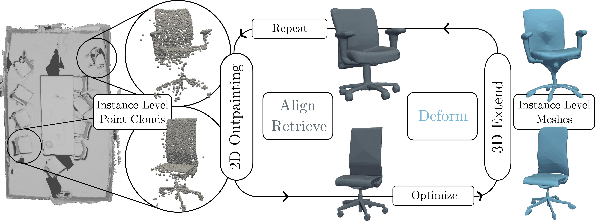

ZeroCAD: Leveraging 2D Outpainting as Guidance for Zero-Shot 3D Instance-based Scene Reconstruction

We propose ZeroCAD, an instance-level scene completion method based on the foundation of scan-to-CAD.
Our methodology advocates for learning 2D outpainting, due to the availability of 2D annotated data, followed by 3D test time optimization to enhance alignment, retrieval, and deformation.
By only supervising the 2D outpainting we enable zero-shot instance reconstruction.
Abstract
Reconstructing instances from incomplete point clouds scenes is a significant challenge, especially due to occlusions that hinder many methods from producing watertight instance reconstructions.
Scan-to-CAD addresses this issue by leveraging CAD databases to infer the general shapes of objects.
Despite recent advancements, existing approaches face two key limitations.
First, they rely heavily on 3D-labeled data for training, which is costly and time-consuming to acquire, leading to lower reconstruction performance.
Second, current methods use implicit shape encodings that often result in non-watertight meshes and require extensive 3D supervision, making zero-shot generalization particularly difficult.
To overcome these challenges, we introduce a novel approach that combines 2D outpainting with 3D test-time optimization.
By training only our proposed 2D outpainting network and using it to guide 3D retrieval, registration, and deformation at test time, we achieve class-agnostic, high-quality CAD object estimation.
Our method enhances this process through a 2D-3D mapping strategy that strengthens 2D guidance during test time.
Additionally, we propose a non-rigid transformation pipeline that addresses mesh quality issues by leveraging biharmonic coordinates for mesh deformation.
Culminating our contributions, we propose a zero-shot joint retrieval, registration, and deformation instance-based scene completion method.
We demonstrate up to a 16% increase in Point Coverage Ratio for Semantic Scene Completion and a 28% improvement in Chamfer Distance for Scan-to-CAD.